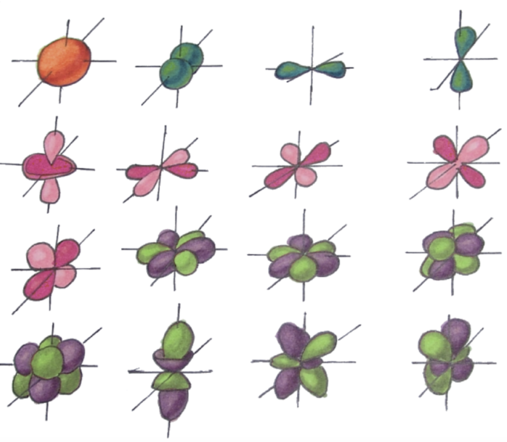
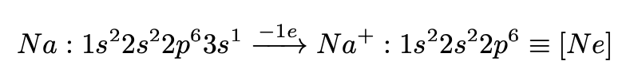
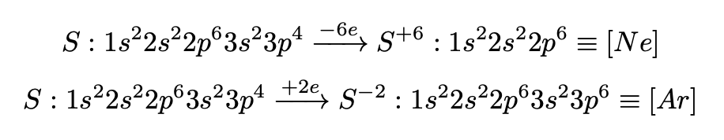

Определение. Атом - мельчайшая химически неделимая частица, состоящая из ядра и электронов.

Количество протонов совпадает с порядковым номером элемента.
| Частица | Заряд | Масса (а. е. м.) |
| Протон | +1 | 1 |
| Электрон | -1 | 0,001 ≈ 0 |
| Нейтрон | 0 | 1 |
Важно! Атом - электронейтральная частица, значит, количество протонов и электронов в атоме одинаково.
Масса атома складывается из массы всех нейтронов, протонов и электронов в атоме:

Массовое число равно сумме количеств протонов и нейтронов в ядре. Тогда количество нейтронов N = Ar - P, где P - порядковый номер.
Определение. Изотопы - атомы с одинаковым количеством протонов, но разным количеством нейтронов.
Пример. Изотоп радиоактивного иода 131I, в огромном количестве поступивший в атмосферу во время взрыва на Чернобыльской АЭС, содержит 53 протона и 53 электрона (их число совпадает с порядковым номером иода в таблице Менделеева), 131 - 53 = 78 нейтронов.
Определение. Орбитали - место наиболее вероятного нахождения электронов. Орбитали могут быть различной формы (s, p, d, f, ...):
Определение. Валентные электроны - электроны, способные участвовать в образовании связей. Обычно они расположены на внешнем электронном уровне.
Количество энергетических уровней совпадает с номером периода, в котором находится элемент. Количество валентных электронов - с номером группы.Принципы заполнений уровней:
Главное квантовое число n определяет общую энергию электрона на данной орбитали (энергетический уровень) и может принимать любые целочисленные значения:
n = 1, 2, 3, ..., ∞
Под главным квантовым числом, равным ∞, подразумевают, что электрону сообщена энергия, достаточная для его полного удаления от ядра (ионизации атома).
Различие в энергетическом состоянии электронов, принадлежащих к разным подуровням данного энергетического уровня, отражает побочное (орбитальное) квантовое число l, которое иожет принимать целочисленные значения:
l = 0, 1, ..., n - 1
Обычно численные значения l принято обозначать следующими буквенными символами:
| Орбитальное число l | Обозначение |
| 0 | s |
| 1 | p |
| 2 | d |
| 3 | f |
Магнитное квантовое число ml характеризует ориентацию орбитали в пространстве. Оно может принимать любые целые значения, как положительные, так и отрицательные:

Спиновое квантовое число ms имеет два возможных значения:

Спин - это собственный момент импульса электрона, не связанный с движением в пространстве.
Пример. При l = 1 есть три возможных значения магнитного квантового числа:
ml = -1, 0, +1
Пример При l = 3 магнитное квантовое число может иметь семь значений:
(2l + 1 = 7) : -3, -2, -1, 0, +1, +2, +3
Принципы заполнения уровней в терминологии квантовых чисел:
Главная задача: распределить электроны по уровням и подуровням согласно вышеперечисленным принципам.
Для удобства цветом отмечены валентные электроны. Можно заметить, что их количество действительно совпадает с номером группы.
Проскок электрона - явление, которое присуще d-элементам. Заключается в том, что s-электрон проскакивает на d-подуровень в случае, если возможны конфигурации d5 или d10.

Задача любого атома – перейти в наиболее выгодную для себя конфигурацию. Атом может либо принимать электроны до заполнения соответствующего уровня, либо отдавать их, для того, чтоб полностью очистить уровень. В самом лучшем это приводит к тому, что элемент приобретает конфигцрацию инертного газа (представителя VIII-A группы).
Пример. Рассмотрим атом натрия: 
Необходимо заметить, что натрий приобрел положительный заряд (потерял отрицатель- но заряженный электрон), теперь мы имеем дело с ионом.
Определение. Ион - заряженная частица.
Принимать электроны атом натрия не станет, это является общим правилом для всех металлов. Металлы не принимают электроны.
